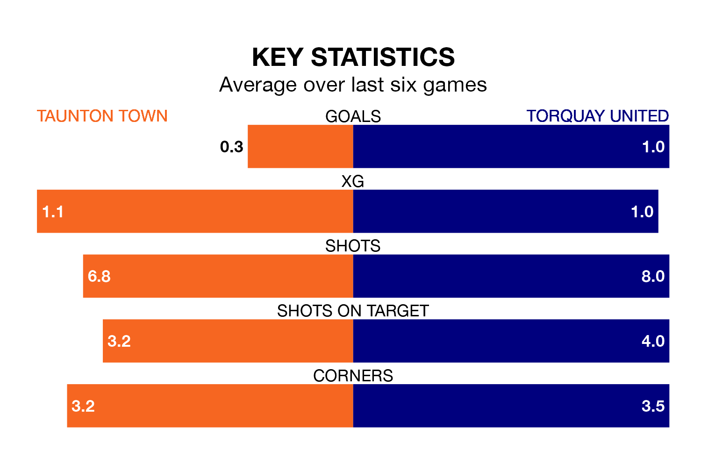

Taunton Town are on a terrible run ahead of hosting Torquay United at the Cygnet Health Care Stadium on Tuesday, with just two points collected from their last six games.
Taunton have picked up two draws and four losses in their last six National League South games, and face a Gulls side whose last six games have brought two wins and one draw.
Taunton are 22nd in the table after 42 games, of which they have won nine and drawn 15, earning 42 points.
Torquay are four places ahead of Town in 18th, with 17 wins and seven draws putting them on 58 points.
With 42 goals in 42 games so far this season, the hosts are the league's second-lowest scorers with 1.0 goals per game. And they are conceding more than average, letting in 68 goals at a rate of 1.6 per game.
United, meanwhile, are above average scorers, with 1.5 goals per game, compared to a league average of 1.4. They have conceded 1.7 goals per game.
Over the last two years, Taunton and Torquay have played each other twice. They won one each.
Their last meeting was on March 12, when Taunton won 3-0 away.
Taunton's last match was on Thursday, a 4-0 loss against Slough Town.
Torquay beat Truro City 2-1 last time out, on April 8.
Updated: 10:01 (UTC), 12/04/24